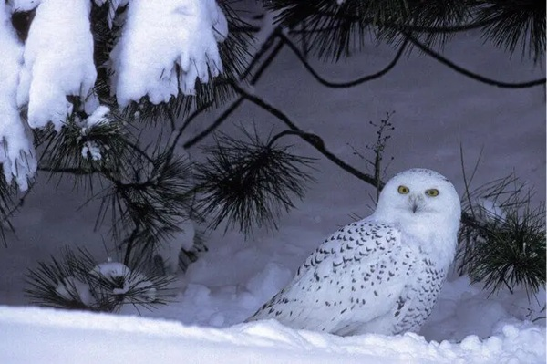

Behold the majestic Snowy Owl, a captivating creature that roams the vast snowy landscapes of the Arctic region. With its striking appearance, this Arctic dweller stands out amidst the icy expanse.
Picture a regal bird with radiant white plumage, perfectly blending with the frosty surroundings. Its enchanting yellow eyes peer curiously, exuding an air of wisdom. But here’s a delightful twist: did you know that the male Snowy Owls boast a unique touch of glamour?
Some of these dashing individuals sport dark markings, akin to an exquisite spotted tuxedo, adding a touch of flair to their already stunning presence.
The Snowy Owl, a symbol of Arctic elegance, selects its nesting grounds with meticulous care. Delicately placing its home on tiny mounds nestled in the sprawling tundra, or perhaps repurposing the abandoned abodes of Arctic Terns and other shorebirds, these resourceful owls create havens on the ground.
Bound by monogamy, they honor tradition by returning faithfully to the same nesting sites year after year, weaving tales of loyalty amidst the icy wilderness.
When it comes to dining, the Snowy Owl showcases its adaptable palate. While lemmings take center stage in their culinary repertoire, these opportunistic hunters savour the flavours of other prey as well.
From rodents scurrying amidst the Arctic landscape to birds that dare to traverse their path, and even the occasional fish swimming in icy waters, the Snowy Owl indulges in a diverse feast, adapting to the ever-changing environment of their surroundings.
Alas, the Snowy Owl faces challenges in its frozen realm. The IUCN, in recognition of declining populations, has placed them under the “Vulnerable” category. Habitat loss, driven by human activities, and the unyielding grasp of climate change have disrupted their delicate balance. Once coveted for their majestic feathers, which adorned fashionable garments and decorative trinkets, these enchanting creatures became targets of the past.